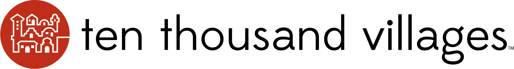

홈 > 브랜드 매거진 > Ten Thousand Villages
Ten Thousand Villages
텐 사우전드 빌리지스(Ten Thousand Villages)는 1946년 에드나 루스 바일러가 미국에서 시작한 공정무역 소매 브랜드다. 개발도상국 장인의 수공예품을 판매하는 북미 최장수급 공정무역 단체로, 메노나이트 중앙위원회(MCC)와 연계된 비영리다.
산업 분야 리테일·커머스 · 공개 등급 자료 기반 · 브랜드 평가 4.1 ★

한눈에 보는 브랜드
텐 사우전드 빌리지스(Ten Thousand Villages)는 1946년 에드나 루스 바일러가 미국에서 시작한 공정무역 소매 브랜드다. 개발도상국 장인의 수공예품을 판매하는 북미 최장수급 공정무역 단체로, 메노나이트 중앙위원회(MCC)와 연계된 비영리다.
브랜드 관점
텐 사우전드 빌리지스는 북미 최장수급 공정무역 소매 단체로, 개발도상국 장인 수공예품을 판매한다. 설립·운영 주체, 업태, 시장 포지션을 함께 보면 리테일·커머스 안에서의 위치가 또렷해진다.
시작과 성장
1946년 에드나 루스 바일러가 푸에르토리코 자수 판매('Self Help Crafts')에서 출발했다. 메노나이트 중앙위원회와 연계된 비영리로 성장했으며 세계공정무역기구(WFTO) 창립 회원이다.
브랜드 아이덴티티
Ten Thousand Villages의 아이덴티티는 브랜드명, 로고 사용 여부, 업종 언어, 국가적 배경을 중심으로 정리됩니다. 공개 로고 자산은 추후 권리 확인 후 보강할 수 있도록 텍스트 메타데이터 중심으로 관리합니다.
제품과 서비스
보석·의류·홈데코 등 개발도상국 장인의 수공예품을 판매한다. 공정무역 인증 상품이 중심이다.
현재 상태
타임라인
정리된 연도형 이벤트가 없습니다.
BI/CI 변천사
함께 읽을 브랜드
 리테일·커머스 · 자료 기반Van Leest
리테일·커머스 · 자료 기반Van LeestVan Leest는 네덜란드의 리테일·커머스 브랜드로, 상품 큐레이션, 가격 체계, 매장·온라인 유통, 구매 편의성이 브랜드 인식을 좌우하는 영역입니다.
 리테일·커머스 · 디렉토리다이소
리테일·커머스 · 디렉토리다이소다이소는 대한민국의 생활용품 균일가 리테일 브랜드입니다. 문구, 주방, 수납, 청소, 뷰티, 식품 등 일상용품을 폭넓게 판매합니다.
 리테일·커머스 · 디렉토리무신사
리테일·커머스 · 디렉토리무신사무신사는 한국 패션 플랫폼 브랜드입니다. 온라인 패션 커머스, 브랜드 입점, 자체 콘텐츠, 오프라인 스토어를 통해 국내 디자이너 브랜드와 젊은 소비자를 연결합니다.
Ay
Ayoh!
리테일·커머스 · 편집 검수Ayoh!Ayoh!는 2024년에 기록된 Shoppy Shop Brands 계열의 브랜드 아이덴티티 사례입니다. Center가 아이덴티티 작업의 디자이너로 기록되어 있습니다....
Be
Best of the Bone
리테일·커머스 · 편집 검수Best of the BoneBest of the Bone는 2025년에 기록된 Shoppy Shop Brands 계열의 브랜드 아이덴티티 사례입니다. Universal Favourite가 아이...
Fl
Flaum
리테일·커머스 · 편집 검수FlaumFlaum는 2025년에 기록된 Shoppy Shop Brands 계열의 브랜드 아이덴티티 사례입니다. M/OTG가 아이덴티티 작업의 디자이너로 기록되어 있습니다....
Ko
Korshags
리테일·커머스 · 편집 검수KorshagsKorshags는 2025년에 기록된 Shoppy Shop Brands 계열의 브랜드 아이덴티티 사례입니다. Pond가 아이덴티티 작업의 디자이너로 기록되어 있습니다...
Lo
Lolo
리테일·커머스 · 편집 검수LoloLolo는 2024년에 기록된 Shoppy Shop Brands 계열의 브랜드 아이덴티티 사례입니다. Odds Studio가 아이덴티티 작업의 디자이너로 기록되어 있...